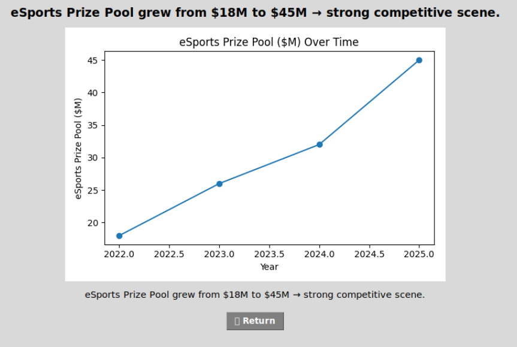
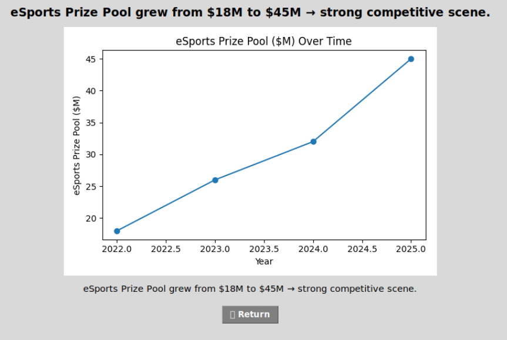

Skills
Technical skills, personal skills, and proof of work.
Technical Skills
- Python
- Pandas
- Matplotlib
- Tkinter
- Replit
- Onshape
- FTC Robotics
Personal & Academic Skills
- Leadership
- Public speaking
- Problem-solving
- Discipline & consistency
Images & Video
 

Public Speaking Demo
1:44